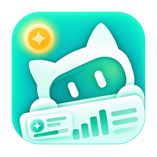

WorkBuddy 积分工作台
v—
S
-
个人版
7天
14天
自定义
~
导出报表
导出明细
桌面快捷方式
开始菜单快捷方式
立即签到
提醒设置
刷新数据
数据概览
消耗分析
收支账本
消耗明细
会话消耗
包生命周期
积分批次
每日消耗
累计消耗趋势
积分收支日历（按天）
消耗
收入
注：日历显示全部历史范围（不受上方日期筛选影响），消耗 = 各资源包「已用积分」的逐日增量（纯消耗口径，不受签到/到账/过期干扰，自今日起每日记录、逐步积累）；收入 = 签到 + 包到账，按真实到账时间归日。
收支账本（日粒度）
日期
签到
包到账
支出
净变化
消耗明细（请求级）
仅看今日实时提示词
导出
时间
模型
客户端
用途
提示词
积分
注：本表为服务端权威流水（口径 A），与「会话消耗」的本地库口径相互独立、可用于对账。提示词为**运行时实时展示**，来自当前会话的接口响应；通过
file://
打开（读取静态 dashboard_data.js）时该列留空 —— 这是刻意的隐私设计，提示词永不落盘。
最近会话消耗
时间
会话标题
模型
消耗积分
调用次数
包生命周期
有效期内
已过期
导出当前页签
到期时间
状态
剩余
已用/总量
类型
浪费
收支损失统计
注：过期浪费与到期风险按资源包到期时间计算，有效批次累计已用取自资源包 CapacityUsed 字段（不含已过期包）。
积分批次（按到期时间升序）
全部状态
可用
已过期
已用完
到期时间
状态
剩余
已用/总量
类型